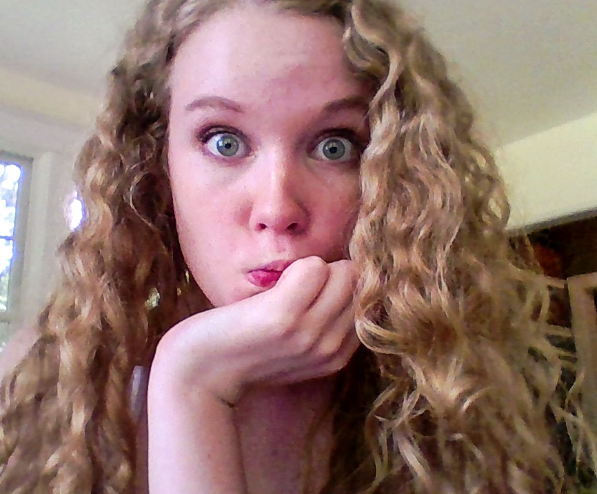

Hello World, I'm Sara.
When I was in 5th grade, I found an old guitar in my Grandpa’s attic. That same year, I decided to start a band, and I taught myself HTML and CSS online so I could make us a website. Now I’m double majoring in Computer Science and Music Technology at Carnegie Mellon University, and I study classical guitar with Professor Jim Ferla. I’ve been pursuing music and programming since I was young, and I strive to combine these two seemingly polar opposite interests into a career. I’m passionate about encouraging creativity and combining the arts with technology, particularly in the fields of Machine Learning and Artificial Intelligence. I love software projects that open up new possibilities for artists and musicians, and have developed many myself. I build robots that play algorithmically generated music, designed my own instrument using a Kinect, and developed an AI that harmonizes with you as you improvise. I’m always looking for new projects to work on, so if you are interested in collaborating, please feel free to contact me!